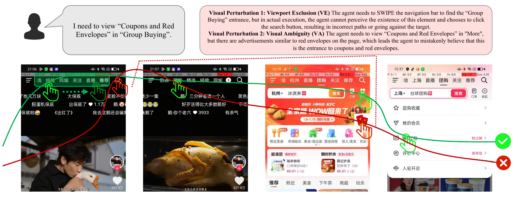
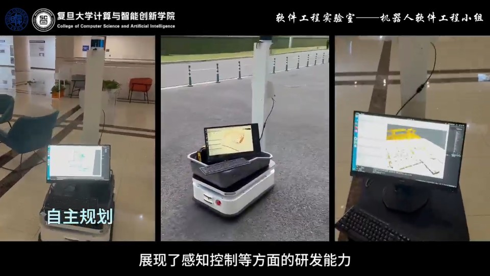
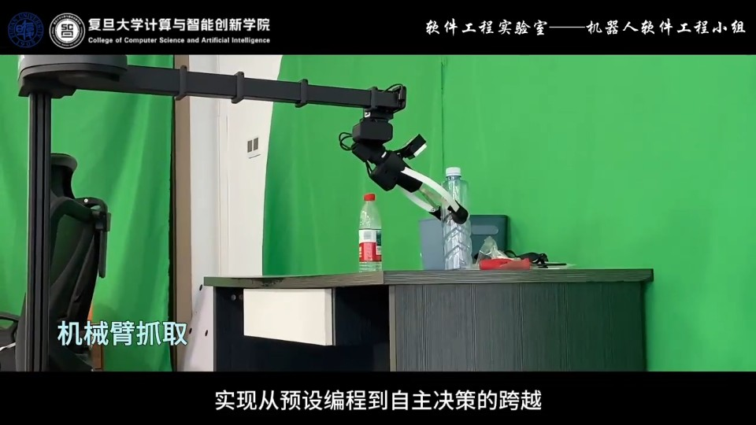

GUI Agent Robustness & Authorization
Studying visual robustness and permission boundaries. This case illustrates failures caused by viewport exclusion and visual ambiguity.
Read the case study ↗Associate Professor
PhD Supervisor
Fudan University
I study the reliability, robustness, and authorization of software and embodied agents, drawing on program analysis, systematic testing, and learning-based methods, including targeted post-training.

Studying visual robustness and permission boundaries. This case illustrates failures caused by viewport exclusion and visual ambiguity.
Read the case study ↗
We study reliable autonomous operation in real-world environments. These AGV demonstrations connect mapping, perception, and motion planning.
View demonstration image ↗
We study VLA execution reliability and targeted post-training. Real-robot grasping demonstrates the manipulation setting behind this research.
View demonstration image ↗